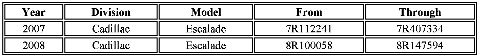

Campaign - Wheel Weight Replacement (Export Only)
Subject:Service Update for Inventory and Customer Vehicles - Incorrect Wheel Weights - Expires with Base Warranty (Export Only)
# 07310 - (12/12/2007)
Models:
2007-2008 Cadillac Escalade
Equipped with Aluminum Wheels - Export Vehicles
This service update includes vehicles in dealer inventory and customer vehicles that return to the dealership for any reason, and will expire at the end of the involved vehicle's new vehicle limited warranty period.
Purpose
This bulletin provides a service procedure to replace the lead wheel weights with zinc wheel weights on all four wheels. The spare tire is not affected.
This service procedure should be completed as soon as possible on involved vehicles currently in dealer inventory and customer vehicles that return to the dealer for any type of service during the New Vehicle Limited Warranty coverage period.
Vehicles Involved

A list of involved vehicles currently in dealer inventory is attached to the message releasing this bulletin. Customer vehicles that return for service, for any reason, and are still covered under the vehicle's base warranty, and are within the VIN breakpoints shown, should be checked for vehicle eligibility prior to beginning repairs.
Parts Information
Parts required to complete this service update are to be obtained locally or if necessary from General Motors Service and Parts Operations (GMSPO). Please refer to your "involved vehicles listing" before obtaining parts. Normal orders should be placed on a DRO = Daily Replenishment Order.
Service Procedure
1. Loosen the wheel nuts on all four wheels. Refer to Tire and Wheel Removal in SI.
2. Lift and support the vehicle. Refer to Lifting and Jacking the Vehicle in SI.
3. Remove all four wheels. Refer to Tire and Wheel Removal in SI.
4. Remove the lead wheel weights from the wheel of the vehicle.
5. Mark the center location of the lead wheel weight with a pen.
Important:
The new wheel weight is larger then the lead wheel weight. Center the new weight in the location of the lead wheel wheel weight. Use the pen mark as a center point guidelines.
6. Center and install the new wheel weight in the location where the lead wheel weight was removed.
7. Install the tire and wheel assembly.
8. Lower the vehicle.
Claim Information
For vehicles repaired under this service update, use the table.

Disclaimer